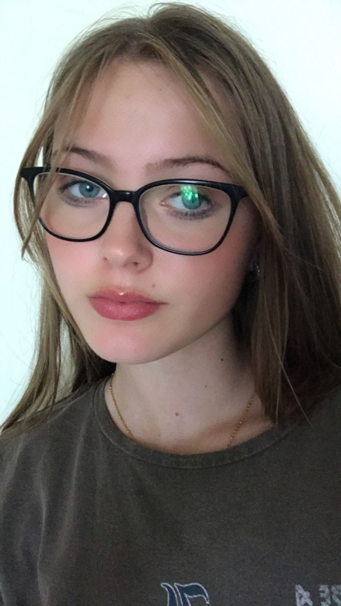
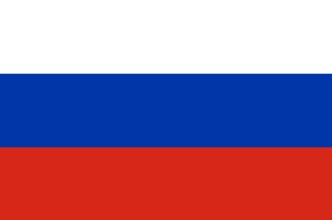
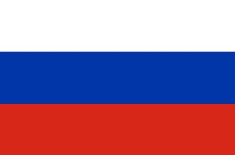

Over mij
Mijn naam is Samantha Catharina Ruder. Ik ben 17 jaar en woon in Sint Pancras. Mijn hobby's zijn: Keyboard spelen, series kijken, gamen en boeken schrijven. Ik heb 3 katten genaamd: Beertje, Bobbie en George. Ik woon nog bij beide ouders en ik heb een nog een zus.
 
